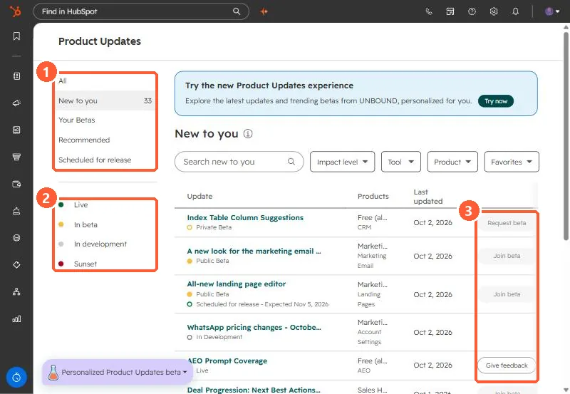

Short answer
Open Product Updates from your profile menu. The left menu has All, New to you (33 in my demo), Your Betas, Recommended, and Scheduled for release, plus status filters: Live, In beta, In development, and Sunset. Public betas show Join beta. Private betas show Request beta. HubSpot says seeing an update does not guarantee access, betas run in your live account under the Beta Terms, and joining does not remove existing features.
1. The Product Updates page
Open Product Updates.


2. Reading it
- Each update shows its status (Private Beta, Public Beta, Live, In Development), the products it affects, and when it was last updated.
- Some show a scheduled release date, such as "Expected Nov 5, 2026" on one in my demo.
- Filters: impact level, tool, product, and favorites.
3. Before you join
Betas are live in your production account. Read the update, check whether it changes something your team relies on, and tell people before you join. Several features covered on this site started as betas.